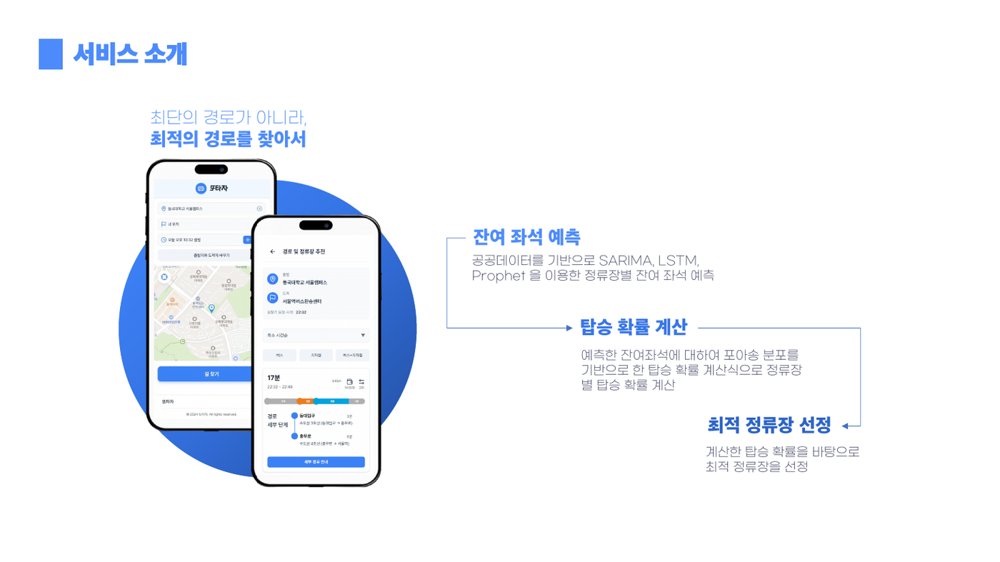
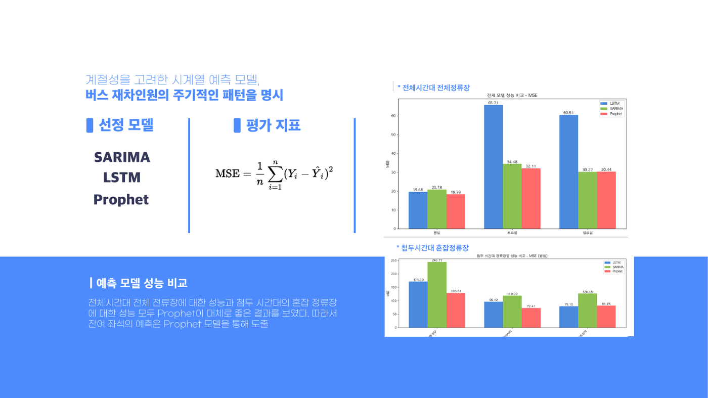
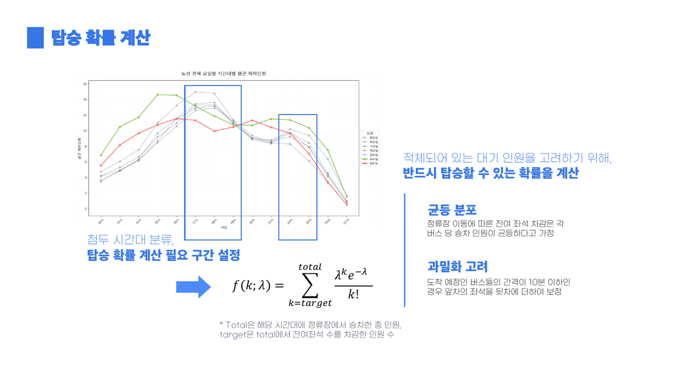
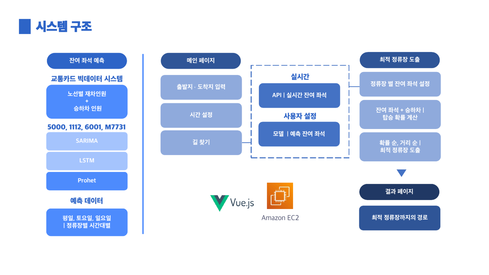
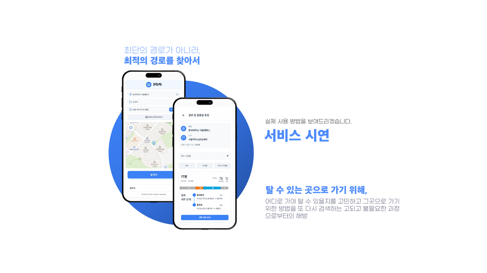

시계열 예측, 팀
광역버스 정류장 추천 서비스 또타자
정류장별 승차 인원을 Prophet·SARIMA·LSTM으로 예측·비교하고 승차 가능 확률로 바꿔 추천
| 기간 | 2024 2학기 |
|---|---|
| 형태 | 4인 팀, 예측 모델 담당 (캡스톤디자인) |
| 기술 | Prophet, SARIMA, LSTM, Pandas, REST API |
| 코드 | github.com/suipizza/2024-2-SCS4031-JP-8 |
내 역할
- 교통카드 빅데이터·공공 API로 정류장·시간대별 승하차 데이터 수집·전처리
- Prophet·SARIMA·LSTM으로 승차 인원 예측, RMSE 등으로 비교
- 예측값에 포아송 분포를 적용해 정류장별 승차 가능 확률 계산
화면과 구성




